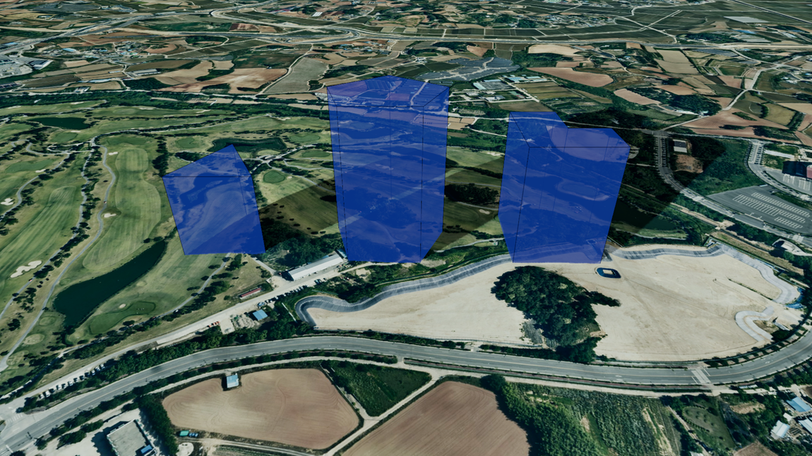

사용자 도형 (UserGeometry)
목차

U3dUserGeometry는 좌표를 이어 만든 다각형을 위로 밀어 올려 기둥을 만듭니다.
정해진 형태가 없어서 부지 경계, 규제 구역, 건물 외곽처럼 임의의 평면 모양이 필요할 때 사용합니다.
height를 0으로 두면 밀어 올리지 않고 평면으로 남습니다.
1. 사용자 도형 생성하기
U3dUserGeometry 생성자로 객체를 만들고, U3dVectorLayer.addGeometry로 레이어에 등록한 뒤 좌표를 지정하면 화면에 표시됩니다.
레이어를 만들고 도형을 등록·제거하는 방법은 3D Geometry 시작하기 - 도형 등록하고 제거하기에서 설명합니다.
좌표를 지정하기 전에는 아무것도 그려지지 않습니다.
도형은 고도 0에서 시작해 height만큼 위로 솟습니다.
좌표의 세 번째 값은 형태에 반영되지 않습니다.
API
U3dUserGeometry(opt) : 사용자 도형 객체를 생성하는 생성자
매개변수
opt(object) : 사용자 도형 생성 옵션opt.name(string) : 객체 이름. 지정하지 않으면 자동으로 생성됩니다opt.height(number) : 기둥 높이(m).0이면 평면. 기본값:100opt.usecurve(boolean) : 좌표 사이를 곡선으로 이을지 여부. 기본값:falseopt.color(ColorRepresentation) : 색상. 기본값:'#ff0000'opt.opacity(number) : 투명도(0~1). 기본값:0.7opt.outline(boolean) : 외곽선 표시 여부. 기본값:trueopt.lineColor(ColorRepresentation) : 외곽선 색상. 기본값:'#000000'opt.wireframe(boolean) : 와이어프레임 표시 여부. 기본값:falseopt.coordinates(Array<GeoPositionVector3>) : 좌표 배열 (위경도, EPSG:4326)opt.properties(KeyValue) : 사용자 정의 속성정보
1. 사용자 도형 생성 예제
좌표 세 개로 삼각형 바닥을 만들고 100m 높이로 밀어 올리는 예제입니다.
부지 경계나 규제 구역처럼 임의의 평면 모양이 필요할 때 사용합니다.
const app = new GeOnDT.U3dAPP({containername: 'map'});
const vectorLayer = new GeOnDT.vector.U3dVectorLayer({name: 'vector'});
const area = new GeOnDT.geom.U3dUserGeometry({
name: 'area_01',
height: 100, // 100m 높이의 기둥
color: '#2b448b',
opacity: 0.7
});
vectorLayer.addGeometry(area); // 벡터 레이어에 등록
// 좌표를 지정하면 그때 도형이 만들어집니다.
area.setPositions([
new THREE.Vector3(126.9385, 37.5188, 0),
new THREE.Vector3(126.9402, 37.5192, 0),
new THREE.Vector3(126.9396, 37.5203, 0)
]);
2. 좌표 지정하기
바닥 다각형의 꼭짓점을 위경도 좌표로 지정합니다.
좌표 전체를 한 번에 넣으려면 setPositions를, 하나씩 이어 붙이려면 addPosition을 사용합니다.
마지막 좌표와 첫 좌표는 자동으로 이어집니다.
삼각형을 만들려면 좌표 세 개만 넣으면 됩니다.
API
U3dUserGeometry.setPositions(coordinates) : 좌표 배열 전체를 지정하는 함수
매개변수
coordinates(Array<GeoPositionVector3>) : 좌표 배열 (위경도, EPSG:4326)
API
U3dUserGeometry.addPosition(x, y, z) : 좌표를 하나 추가하는 함수
매개변수
x(number) : 경도y(number) : 위도z(number) : 높이(m). 형태에는 반영되지 않습니다
API
U3dUserGeometry.getPositions() : 지정된 위경도 좌표 배열을 반환하는 함수
반환값
return(Array<GeoPositionVector3>) : 위경도 좌표 배열 (EPSG:4326)
API
U3dUserGeometry.getVertex() : 변환된 월드 좌표 배열을 반환하는 함수
반환값
return(Array<WorldPositionVector3>) : 좌표 배열 (월드 좌표, EPSG:3857)
1. 사각형 부지를 만드는 예제
꼭짓점을 시계 방향으로 넣어 사각형 바닥을 만듭니다.
마지막 좌표와 첫 좌표는 자동으로 이어지므로 네 개만 넣으면 됩니다.
area.setPositions([
new THREE.Vector3(126.9385, 37.5188, 0),
new THREE.Vector3(126.9405, 37.5188, 0),
new THREE.Vector3(126.9405, 37.5202, 0),
new THREE.Vector3(126.9385, 37.5202, 0)
]);
console.log(area.getPositions().length); // 4
2. 좌표를 하나씩 추가하는 예제
사용자가 화면을 클릭할 때마다 꼭짓점을 늘려 가는 경우에 사용합니다.
area.addPosition(126.9385, 37.5188, 0);
area.addPosition(126.9402, 37.5192, 0);
area.addPosition(126.9396, 37.5203, 0);
3. 높이와 모서리 조절하기
생성 후에 형태를 바꾸려면 setParam에 바꿀 값만 담아 전달합니다.
전달한 값만 반영되고 나머지는 기존 값이 유지되며, 형태 관련 값을 바꾸면 지오메트리가 즉시 다시 만들어집니다.
usecurve를 켜면 좌표 사이를 곡선으로 이어 모서리가 부드러워집니다.
직선으로 이을 때보다 정점이 늘어납니다.
API
U3dUserGeometry.setParam(param) : 여러 속성을 한 번에 갱신하는 함수
매개변수
param(object) : 변경할 속성 객체param.height(number) : 기둥 높이(m).0이면 평면param.usecurve(boolean) : 좌표 사이를 곡선으로 이을지 여부param.color(ColorRepresentation) : 색상param.opacity(number) : 투명도(0~1)param.outline(boolean) : 외곽선 표시 여부param.lineColor(ColorRepresentation) : 외곽선 색상param.wireframe(boolean) : 와이어프레임 표시 여부
API
U3dUserGeometry.getParam() : 현재 속성을 반환하는 함수
반환값
return(object) : 높이·외곽선·곡선 보간 등 현재 속성 객체
1. 높이 변경 예제
고도 제한이 바뀐 구역처럼 같은 바닥에 높이만 다시 주는 경우입니다.
area.setParam({height: 200}); // 200m로 높이기
2. 평면으로 만드는 예제
부지 경계만 바닥에 표시하고 기둥은 세우지 않을 때 사용합니다.
area.setParam({height: 0}); // 밀어 올리지 않고 바닥면만
3. 모서리를 부드럽게 만드는 예제
꼭짓점이 적어도 곡선으로 이어져 부드러운 형태가 됩니다.
하천 구역처럼 각지지 않은 경계를 표현할 때 사용합니다.
area.setParam({usecurve: true});
4. 현재 속성 확인 예제
getParam이 돌려준 객체는 다른 도형의 setParam에 그대로 넘겨 같은 형태로 맞출 수 있습니다.
const param = area.getParam();
console.log(param.height, param.usecurve, param.outline);
4. 색상과 외곽선 설정하기
색상은 setColor, 투명도는 setOpacity로 바꿉니다.
외곽선은 기본으로 켜져 있으며 setLineColor로 색을 바꿉니다.
구역을 반투명하게 두고 외곽선을 진하게 주면 경계가 또렷하게 보입니다.
API
U3dUserGeometry.setColor(color) : 색상을 설정하는 함수
매개변수
color(ColorRepresentation) : 색상 값
API
U3dUserGeometry.setOpacity(opacity) : 투명도를 설정하는 함수
매개변수
opacity(number) : 투명도(0~1).0이면 완전 투명,1이면 불투명
API
U3dUserGeometry.setLineColor(lineColor) : 외곽선 색상을 설정하는 함수
매개변수
lineColor(ColorRepresentation) : 외곽선 색상
API
U3dUserGeometry.getLineColor() : 외곽선 색상을 반환하는 함수
반환값
return(ColorRepresentation) : 외곽선 색상
1. 색상과 투명도 변경 예제
구역 종류별로 색을 달리하거나, 안쪽 시설물이 비쳐 보이도록 투명도를 낮출 때 사용합니다.
area.setColor('#00b3ff');
area.setOpacity(0.5);
2. 외곽선 제어 예제
구역을 반투명하게 두고 외곽선을 진하게 주면 경계가 또렷해집니다.
여러 구역이 붙어 있을 때 구분하기 좋습니다.
area.setLineColor('#ffffff'); // 외곽선 색상 변경
area.setParam({outline: false}); // 외곽선 제거
5. 속성정보와 해제
도형에는 id, 이름, 업무 데이터 같은 부가 정보를 key-value 형태로 담아 둘 수 있습니다.
새 속성을 넣을 때는 addProperties, 기존 값을 바꿀 때는 changeProperties, 전체를 통째로 교체할 때는 setProperties를 사용합니다.
더 이상 쓰지 않는 도형은 dispose로 정리합니다.
API
U3dUserGeometry.getProperties() : 사용자 정의 속성정보를 반환하는 함수
반환값
return(KeyValue) : 사용자 정의 속성정보
API
U3dUserGeometry.setProperties(input) : 사용자 정의 속성정보 전체를 설정하는 함수
매개변수
input(KeyValue | string) : 속성 객체 또는 JSON 문자열
API
U3dUserGeometry.addProperties(key, value) : 속성정보를 하나 추가하는 함수
매개변수
key(string) : 속성 식별키value(*) : 속성 값
API
U3dUserGeometry.changeProperties(key, value) : 기존 속성정보의 값을 변경하는 함수
매개변수
key(string) : 변경할 속성 식별키value(*) : 속성 값
API
U3dUserGeometry.removeProperties(key) : 속성정보를 제거하는 함수
매개변수
key(string) : 제거할 속성 식별키
API
U3dUserGeometry.setShadow(enabled) : 그림자 사용 여부를 설정하는 함수
매개변수
enabled(boolean) : 그림자 사용 여부. 기본값:true
API
U3dUserGeometry.isShadow() : 그림자 사용 여부를 반환하는 함수
반환값
return(boolean) : 그림자 사용 여부
API
U3dUserGeometry.getUid() : 도형의 고유 식별자를 반환하는 함수
반환값
return(number) :userData.id가 지정되어 있으면 그 값, 없으면 내부 객체 id
API
U3dUserGeometry.dispose() : 도형과 관련 리소스를 해제하는 함수
1. 속성정보 다루기 예제
area.addProperties('구역명', '제1공구');
area.addProperties('관리번호', 'U-0118');
area.changeProperties('구역명', '제2공구'); // 기존 값 변경
area.removeProperties('관리번호'); // 속성 제거
console.log(area.getProperties()); // {구역명: '제2공구'}
2. 해제 예제
레이어에서 먼저 제거한 뒤 해제합니다.
vectorLayer.removeGeometry(area);
area.dispose();